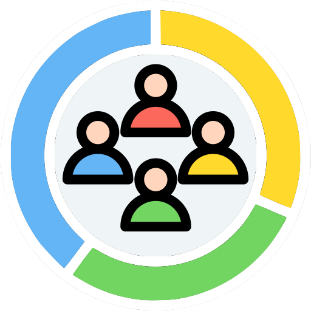

Resume
Select a category to learn more about my background.
School
Job
Activity
Education
New York University
New York, USA
I am currently studying Sociology at New York University’s College of Arts and Science, earning a Bachelor of Arts with an expected graduation date of December 2025 and a GPA of 3.5/4.0.
I studied abroad in London through NYU’s program from August to December 2024. My coursework has focused on climate change, family dynamics, immigration, law and society, and human rights, including a seminar on the sociology of genocide and human rights.
Work Experience
Yonhap INFOMAX
Seoul, Korea — Intern (May 2025 – August 2025)
During my internship at Yonhap INFOMAX, I was involved in launching a new B2B business centered on an AI-powered program. I supported both service development and client-facing deliverables, researched potential partner companies to understand their needs and marketing strategies, and created tailored AI-generated video content for client engagement and presentations. I also helped coordinate project schedules, prepared business presentations, and conducted quality control testing after each program update, providing structured feedback to the AI development team to improve overall performance and usability.
CSR Impact
Seoul, Korea — Intern (May 2024 – August 2024)
At CSR Impact, I explored new technologies and industry trends, contributing ideas that helped improve internal processes. I also maintained an organized filing system for the office, which enhanced efficiency and accuracy in daily operations, supporting the team’s overall workflow.
Activities
WFUNA CLUN
Secretary — Seoul, Korea & New York, USA (October 2025 – Present)
As Secretary of WFUNA CLUN, I take part in pre-program training sessions focused on global issues, which has strengthened my analytical thinking and international awareness. I work closely with team members to develop guidance for individuals interested in careers at international organizations, including support with competitive application materials. I also help coordinate project workflows and timelines, conduct outreach to participants, and facilitate interviews to gather insights that shape and inform program activities.
Animal Rights Collective
Member — New York, USA (September 2025 – Present)
As a member of the Animal Rights Collective, I participate in faculty-led academic panels that explore contemporary animal rights from artistic, philosophical, and legal perspectives. I engage in weekly discussions on how marginalized species are represented and how cultural narratives influence perceptions of animal value. I also contribute to creative outreach materials and artistic installations aimed at raising public awareness through accessible and visually engaging media.
TEDxNYU
Member — New York, USA (September 2024 – December 2024)
During my time with TEDxNYU, I actively participated in discussions and workshops alongside innovative thinkers from diverse backgrounds. Through open dialogue, I gained insight into peer interests and generational trends, strengthening my ability to communicate with empathy and relevance. This experience also helped me become more comfortable engaging with diverse perspectives and contributing thoughtfully in collaborative and complex discussion settings.